עיצוב מחדש של דמויות, ארק ויזואלי מלא, ומשוב משתמש
| קטגוריה | פירוט | סטטוס |
|---|---|---|
| סנסיי זן - חזרה לצב | Model sheet + דף הבעות V2 בצורת צב | הושלם |
| סאקורה - עגורה מבוגרת | Model sheet + דף הבעות V2 כעגורה בוגרת | הושלם |
| גליץ' - 6 גרסאות | מבולבלת, מתגבשת, נייטרלית, מושחתת, שבורה, שלמה | הושלם |
| מלכת הבאגים (זרה) V2 | דף הבעות מעודכן ועקבי | הושלם |
| מלך הבאגים (קרס) V2 | דף הבעות מעודכן ועקבי | הושלם |
| מאסטר ביט + משפחת קי | פרופיל מלא, סיפור רקע, רז (אבא) | בעבודה |
| ביקורת סקילים פרונטאנד | בדיקת סקילים ואימוץ בין-פרויקטים | בעבודה |
כל הדמויות עוצבו מחדש בעקבות משוב ישיר מהמשתמש. לחצו על תמונה להגדלה.
המשתמש דרש בתוקף: סנסיי זן חייב לחזור להיות צב! הגרסה האנושית בוטלה לחלוטין. זן חזר לצורתו המקורית - צב חכם ושלו שמלמד הקלדה בסבלנות אינסופית. העיצוב החדש שומר על האישיות הרגועה והחוכמה העתיקה, עם אלמנטים של דוג'ו ומדיטציה.
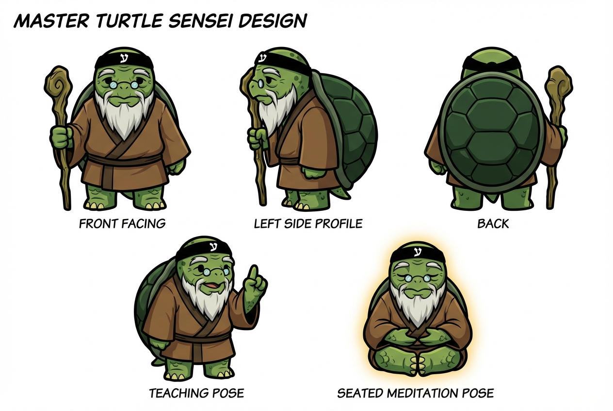
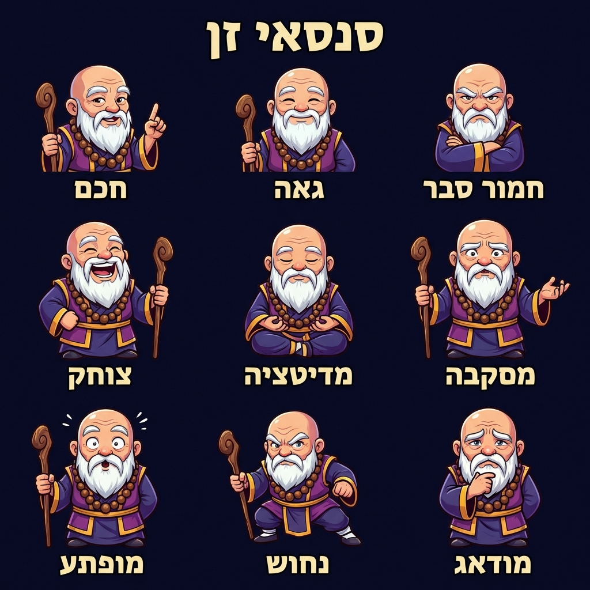
סאקורה עוצבה מחדש כעגורה מבוגרת - לא ילדה, אלא מנטורית בוגרת בגילו של סנסיי זן. היא מייצגת חוכמה, חן, ודיוק - כמו עגורה יפנית אמיתית. העיצוב החדש מדגיש את הקשר בינה לבין זן כשני מנטורים ותיקים שמשלימים זה את זה.
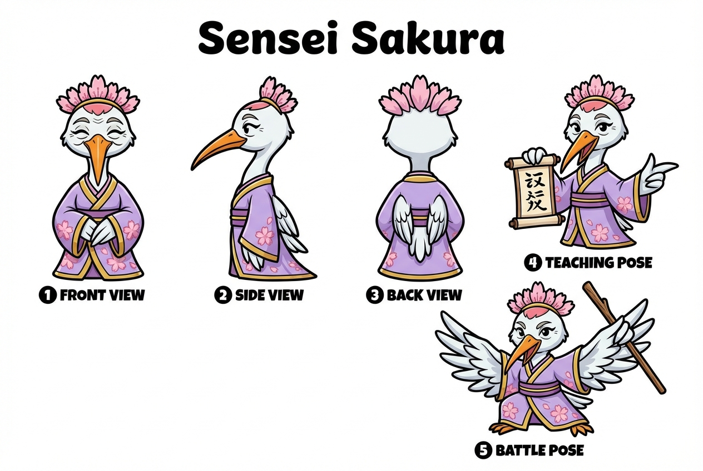
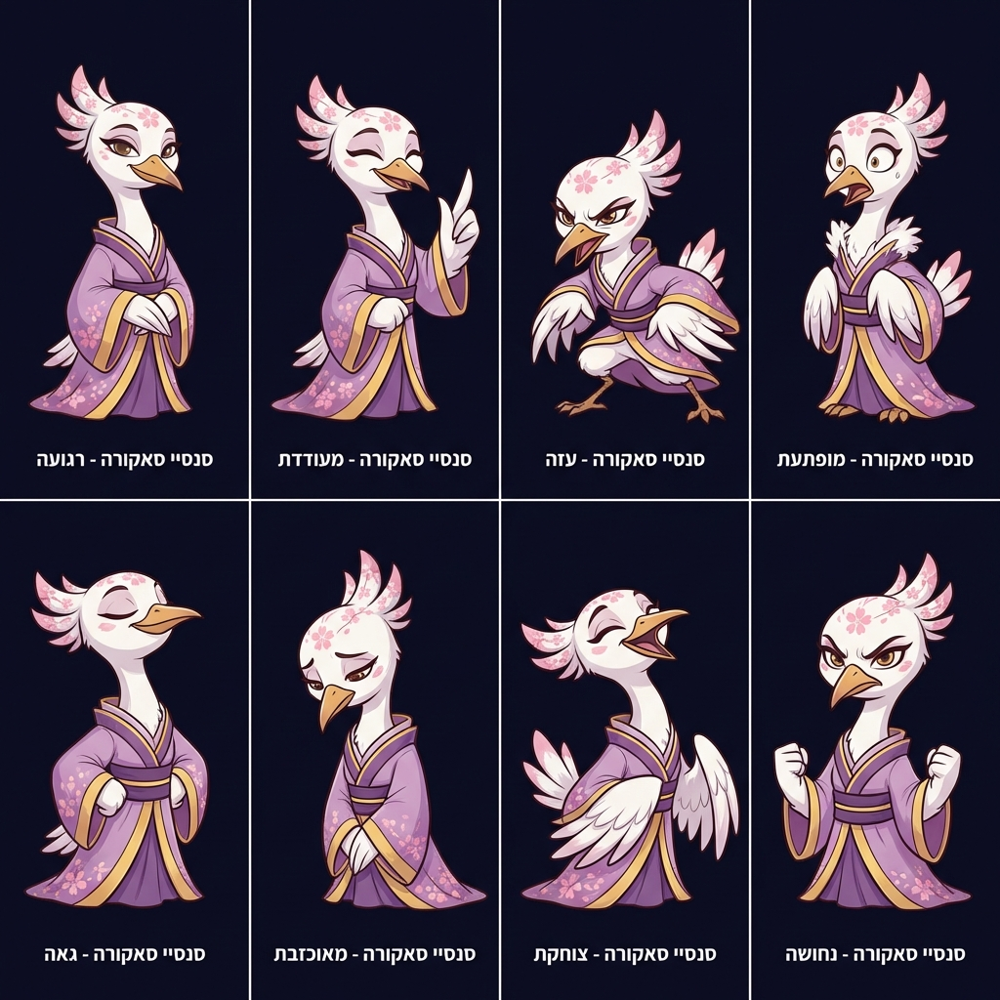
גליץ' היא דמות מפתח בסיפור - נקבית, חמודה, ומורכבת. היא לא מתה! במקום זאת, היא עוברת מסע מלא: מבלבול ראשוני, דרך התגבשות, שחיתות על ידי הווירוס, שבירה רגשית, ולבסוף - שלמות ומיזוג מחדש. כל 6 הגרסאות תוכננו כדי לשקף את הארק הרגשי המלא שלה לאורך 6 פרקים.
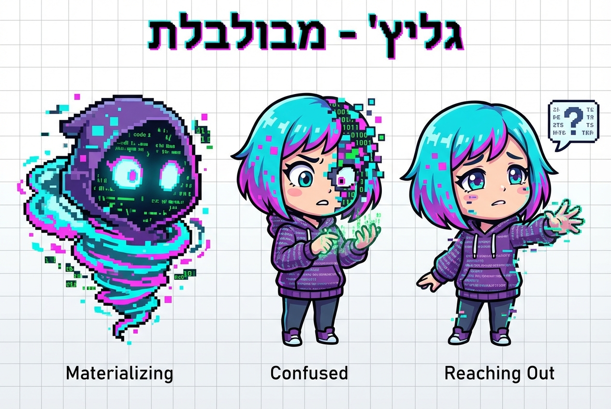
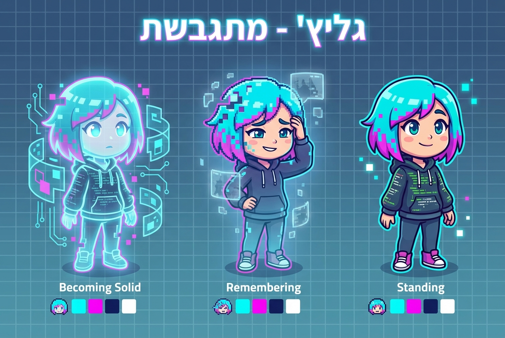
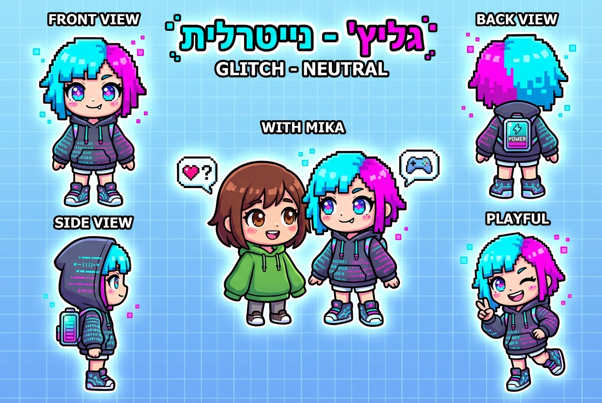
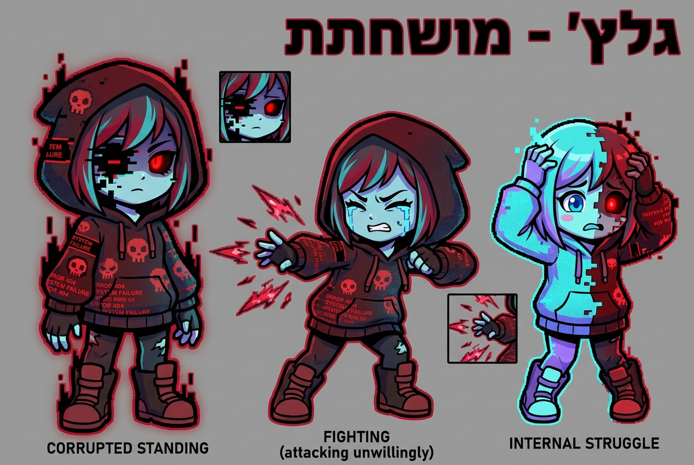
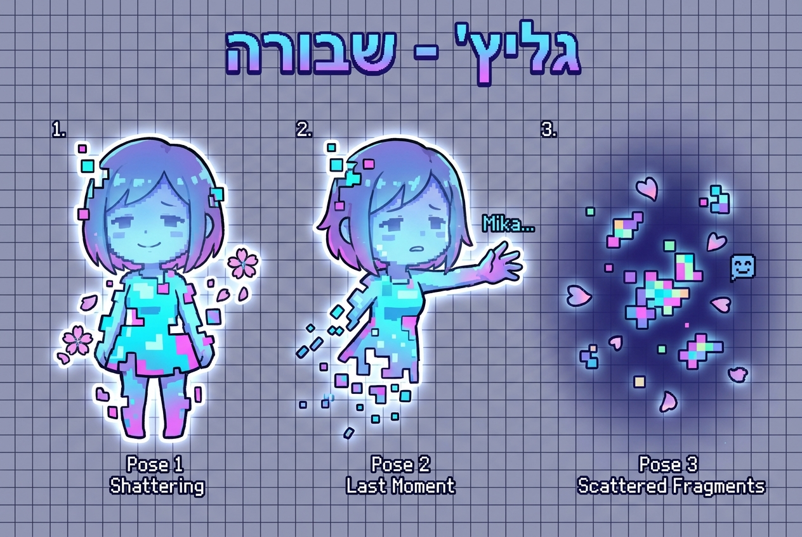
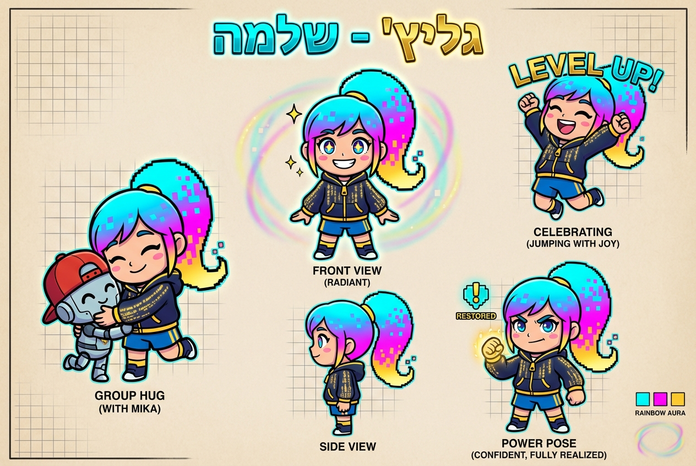
ה-model sheet של זרה היה מצוין, אבל דף ההבעות לא היה עקבי. הגרסה החדשה מתוקנת ומבטיחה שכל 8 ההבעות נראות כמו אותה דמות - עם אותו סגנון, פרופורציות, וצבעים.
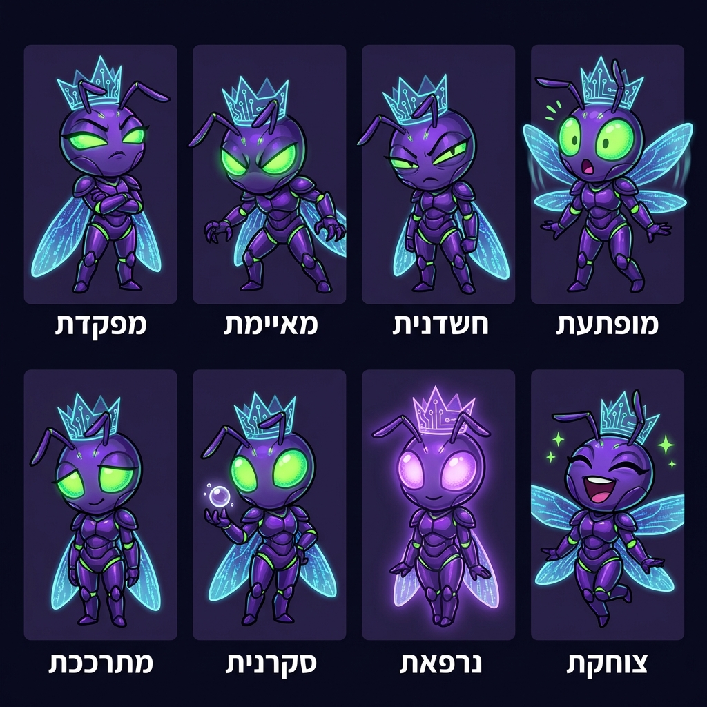
בדומה לזרה, גם דף ההבעות של קרס שודרג לגרסה V2 כדי להבטיח עקביות מלאה עם ה-model sheet המקורי. כל ההבעות משקפות את אותו עיצוב - חרקי, מאיים, ומלכותי.
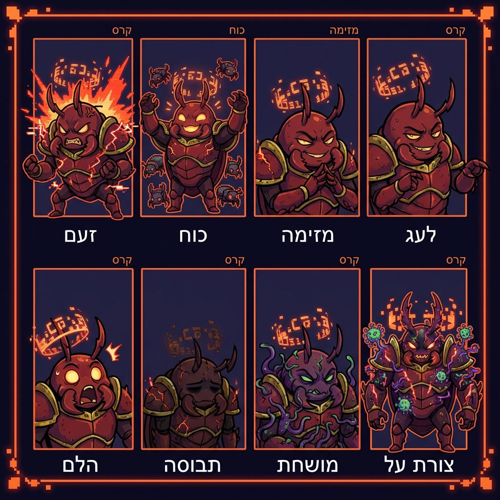
המשוב מה-8 במרץ 2026 כלל דרישות ברורות לגבי עיצוב דמויות, עקביות ויזואלית, וסיפור רקע. להלן סטטוס הביצוע לכל פריט:
| קובץ | נתיב | סוג |
|---|---|---|
| sensei-zen-v2.jpg | public/images/characters/model-sheets/ | model sheet |
| zen-expressions-v2.jpg | public/images/characters/expressions/ | הבעות |
| sakura-model-sheet-v2.jpg | public/images/characters/model-sheets/ | model sheet |
| sakura-expressions-v2.jpg | public/images/characters/expressions/ | הבעות |
| glitch-v1-confused.jpg | public/images/characters/model-sheets/ | גליץ' ארק |
| glitch-v2-forming.jpg | public/images/characters/model-sheets/ | גליץ' ארק |
| glitch-v3-neutral.jpg | public/images/characters/model-sheets/ | גליץ' ארק |
| glitch-v4-evil.jpg | public/images/characters/model-sheets/ | גליץ' ארק |
| glitch-v5-broken.jpg | public/images/characters/model-sheets/ | גליץ' ארק |
| glitch-v6-whole.jpg | public/images/characters/model-sheets/ | גליץ' ארק |
| zara-expressions-v2.jpg | public/images/characters/expressions/ | תיקון |
| keres-expressions-v2.jpg | public/images/characters/expressions/ | תיקון |
איטרציה 9 הניחה את הבסיס הויזואלי לעקביות דמויות. השלבים הבאים מתמקדים בבניית מנגנונים, תוכן חדש, ו-POC למעבר ל-3D.
8 במרץ 2026 | ספרינט: Character Consistency & Redesign
12 תמונות חדשות | 4 דמויות עוצבו מחדש | 6 גרסאות גליץ' | 2 מסמכי HTML
1,093 unit tests | 0 TypeScript errors | 17+ model sheets | 12+ expression sheets
Next.js 15 | React 19 | TypeScript | Tailwind CSS 4 | Framer Motion | Zustand | Gemini (Image Gen)